awesome-design-md
84 DESIGN.md analyses of real sites, from Apple to Stripe.
A Claude skill
One workflow, five sources. From a one-line brief to a page you have actually seen in a browser.
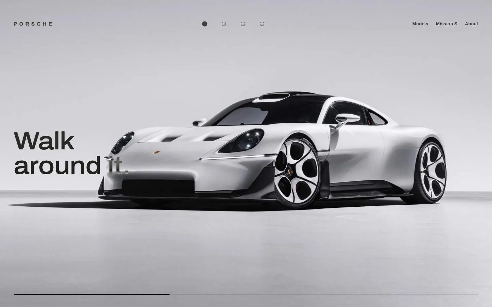
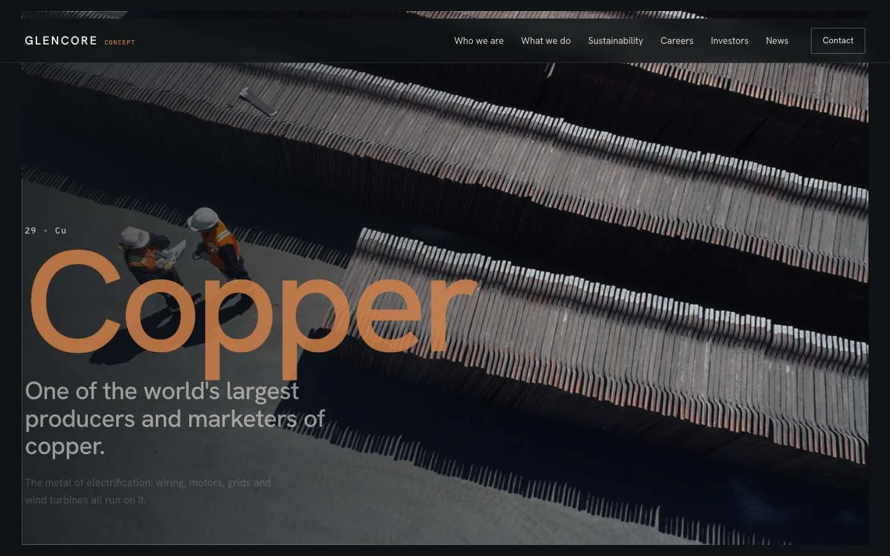
You can spot it in a second. Models fall back to the same defaults. The skill names every one of them and bans it before the first line of code.
Brief inference, three dials, layout discipline, the AI-tell ban list and a 60-point pre-flight.
60+checks before anything ships
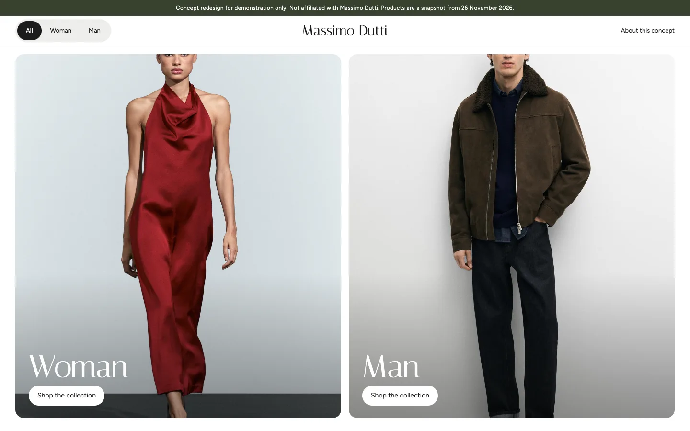
Reference first. Analyse the image like a spec, then build to it.
84 DESIGN.md analyses of real sites, from Apple to Stripe.
The accessibility and UX audit pass.
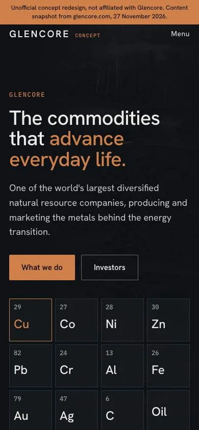
Screenshots at every viewport. Nothing ships unseen.
Signals, mode, one-line Design Read, three dials.
A screenshot, a generated image or a DESIGN.md. Never free-design.
Section pack, layout families, the locks.
Hero rules first, then the craft defaults.
playwright-cli at 1440, 1280 and 390.
Guidelines, pre-flight, contrast, keyboard.
Said out loud before any code
Reading this as: a concept redesign for car buyers, with a cinematic language, leaning toward white-studio editorial with scroll-driven film.
The read sets the dials. The dials gate every layout, motion and spacing decision after it.
Name a brand and the skill reads its DESIGN.md: tokens, type scale, radius logic, motifs. This deck runs on the Raycast one.
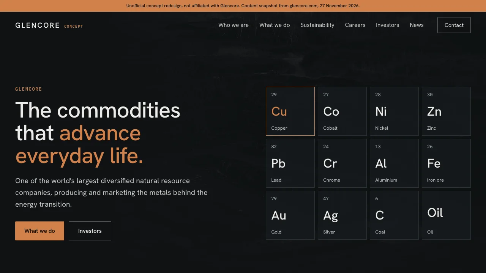
No section flips light to dark mid-scroll.
Under 80% saturation, on every page.
Sharp, soft or pill. Never a mix.
Not Inter, not a reflex serif.
From a library, never hand-drawn.
Not "Contact" and "Let's talk" on one page.
# served over http, never file:// playwright-cli open http://localhost:8000 playwright-cli resize 1440 900 playwright-cli screenshot --full-page playwright-cli resize 390 844 playwright-cli eval "scrollWidth > innerWidth" false
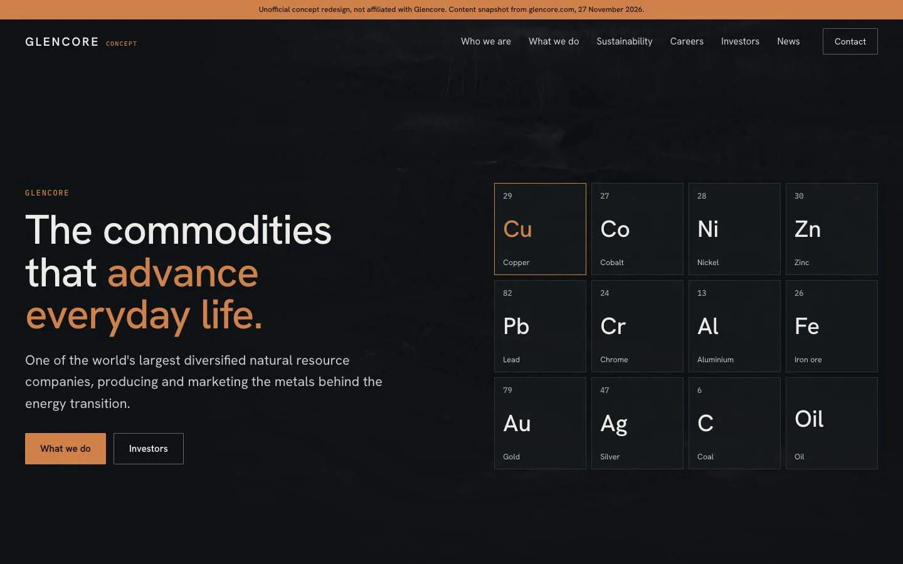
Mechanical where it can be. A failed line sends the page back to the build step, not out the door.
0≤ 1false04.5:1allUnofficial concept redesigns built in one session. Swipe or scroll sideways.
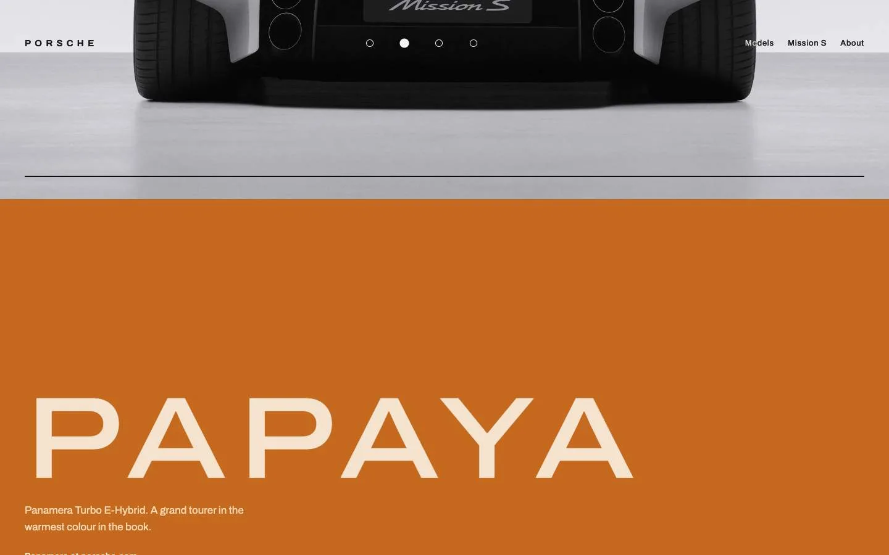
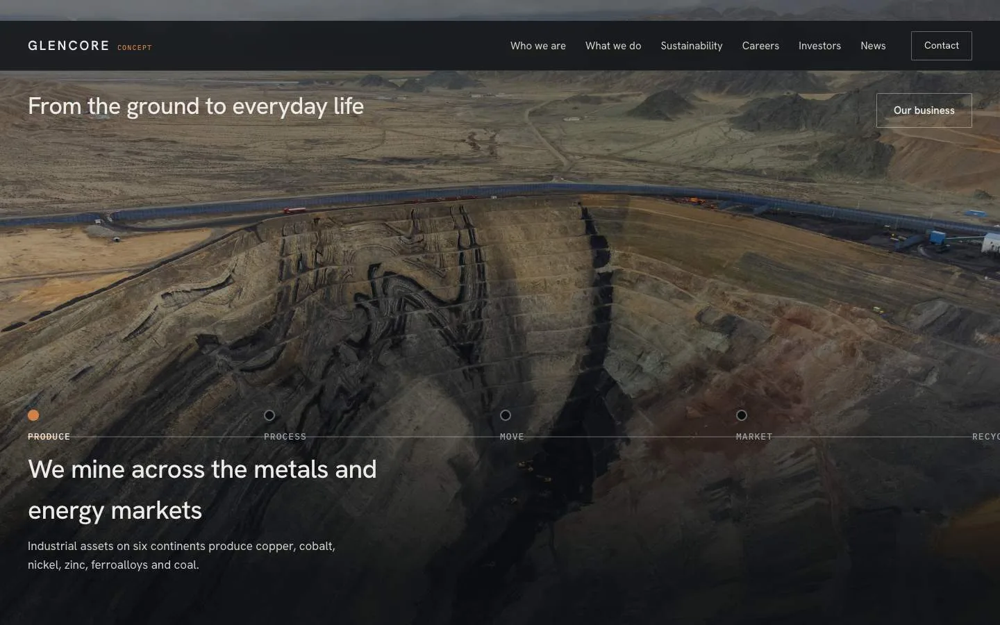
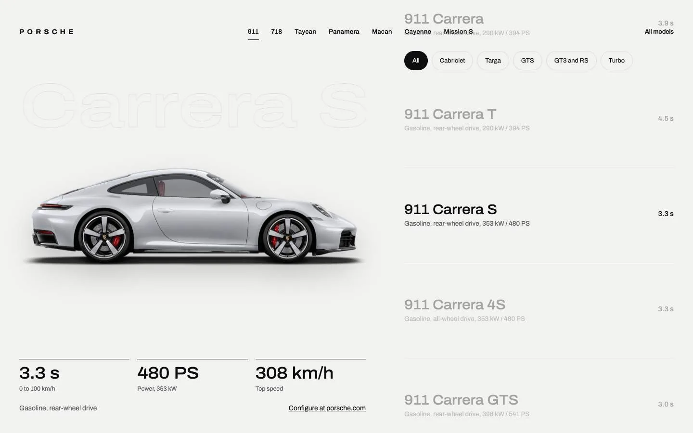
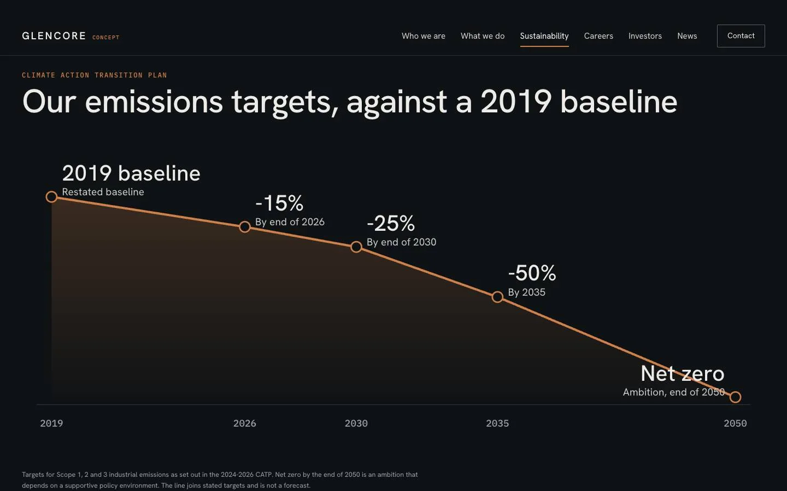
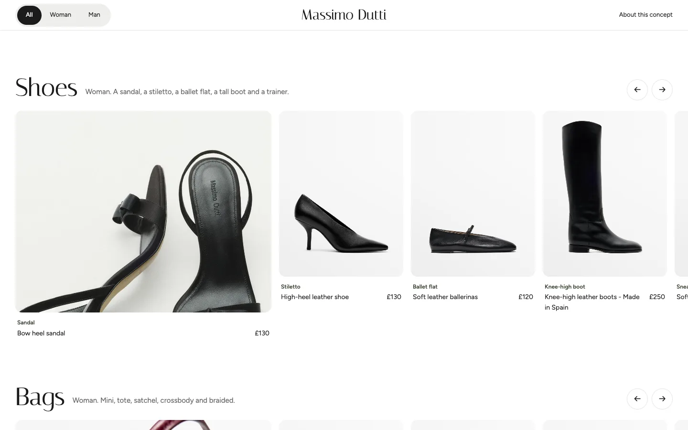
WebsitePresentationHero combines Taste Skill and Image-to-Code by Leonxlnx, awesome-design-md by VoltAgent, Vercel's Web Interface Guidelines and Microsoft's playwright-cli. The concept sites shown are unofficial redesigns and are not affiliated with Porsche, Glencore or Massimo Dutti. This deck follows the skill's own web-presentation mode.